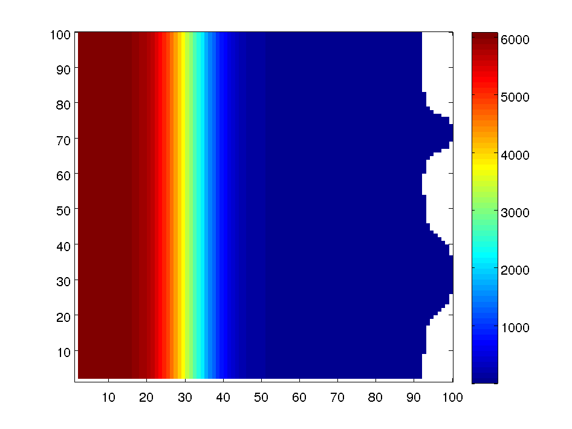
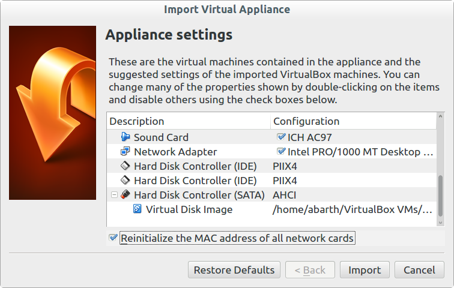
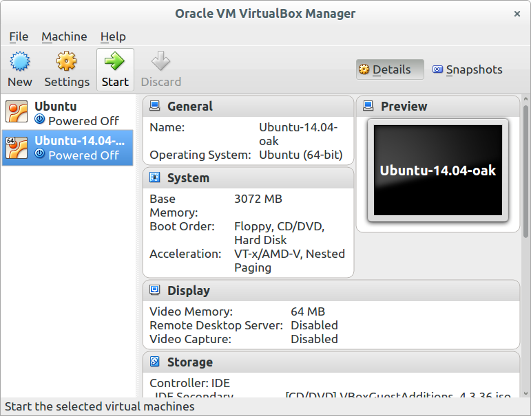
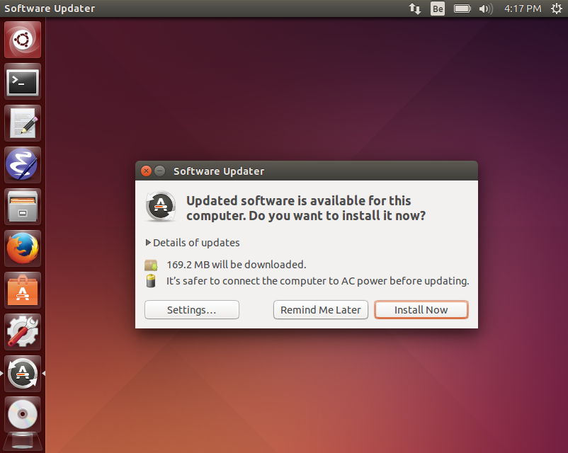
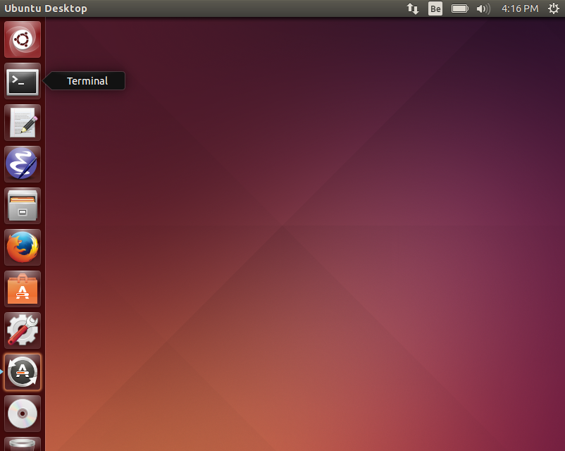
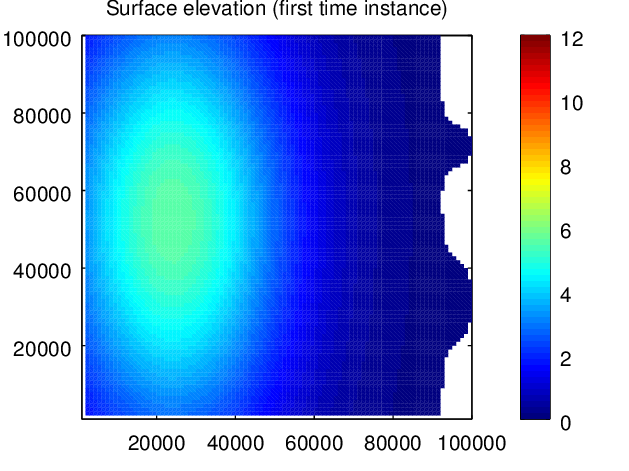
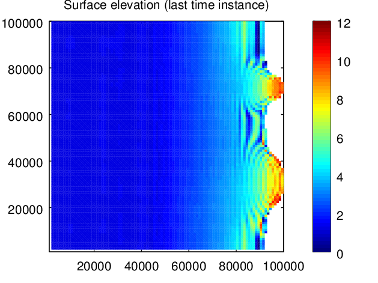
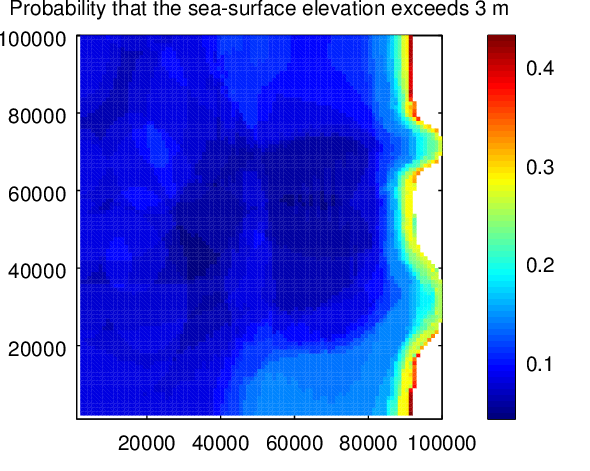
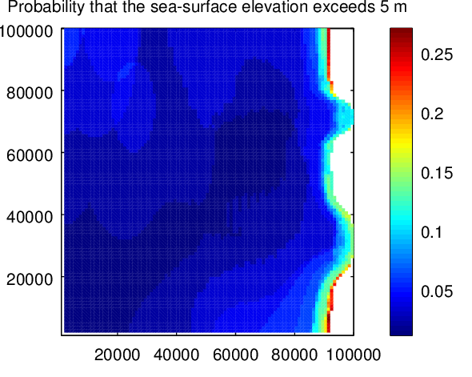

class: center, middle # Exercises with the Ensemble Kalman Filter and the Ocean Assimilation Kit http://alexander-barth.github.io/assim-challenge/ Alexander Barth --- # Objective * With a very simple model, make __stochastic ensemble simulations__ * Compute __probabilities__ from ensemble simulations * __Adapt the model to assimilate observations__ using the Ensemble Transform Kalman Filter * Assess the __impact of the location of the observations__ on the ensemble predictions --- # Test case * Assume that there is a (small) earth-quake in the ocean. * The epicenter and the amount of water displaced in known within some bounds. * No damage is expected as long as the wave is smaller than 3 meters. * What is the probability that the resulting wave is larger than 3 meters? * For future similar events, we want to deploy 5 observing stations. * The waves takes about 50 min to reach the shore, we assimilate observations during 15 min and make a forecast for the remaining 35 min. * Try different location of these 5 observation stations and try to determine the most favorable location for the present case. --- # Shallow water equations * For this exercise we consider a simple linear shallow water equation model $$\definecolor{ommitted}{RGB}{130,130,130}$$ $$\frac{\partial \eta}{\partial t} + \frac{\partial U}{\partial x} + \frac{\partial V}{\partial y} = 0$$ $$ \frac{\partial U}{\partial t} + {\color{ommitted} \frac{\partial (u U)}{\partial x} + \frac{\partial (v U)}{\partial y}} - f V = -gh \frac{\partial \eta}{\partial x} $$ $$ \frac{\partial V}{\partial t} + {\color{ommitted} \frac{\partial (u V)}{\partial x} + \frac{\partial (v V)}{\partial y}} + f U = -gh \frac{\partial \eta}{\partial y} $$ $\eta$ is the elevation, $U$ and $V$ are the depth integrated transports (units m²/s) in $x$ and $y$ directions. * Non-linear terms in gray have been neglected. --- # Model domain * 100 km by 100 km with a resolution of 1 km * Deep ocean part followed by a shelf break and two bays * Closed domain <div style="text-align:center">  </div> --- # Initial conditions * no velocity: $U = V = 0$ * unknown (random) surface elevation $\eta$ perturbation $$\eta = A e^{ - \frac{(x-x_c)^2}{L_x^2} - \frac{(y-y_c)^2}{L_y^2} } $$ where $L_x$ = 30 km and $L_y$ = 60 km. $A$, $x_c$ and $y_c$ are random variables following a Gaussian distribution: $$\begin{align} A &= {\cal N}(0,(3 \,\mbox{m})^2) \\\\ x_c &= {\cal N}(20\,\mbox{km},(10\,\mbox{km})^2) \\\\ y_c &= {\cal N}(50\,\mbox{km},(30\,\mbox{km})^2) \end{align}$$ --- # Import and start the virtual machine * Locate the file `Ubuntu-14.04-oak.ova` and double-click * __Check the option "Reinitialize the MAC address of all network cards".__ * All other options, can be left as default. <div style="text-align:center">  </div> --- # Start the virtual machine * Click on Start <div style="text-align:center">  </div> --- # Don't do the updates * You might see a screen like this <div style="text-align:center">  </div> * Click on __Remind Me Later__, please don't do the updates. --- # Ubuntu environment (Linux) <div style="float: right">  </div> * We will use a terminal * a text editor (`gedit` et `emacs` are installed) * Maybe you will also use the file manager --- # Step 1: free model run * __Objective: make a (single) model run without assimilation and with a fixed initial condition.__ * Open a terminal and go to the folder `/home/gher/shallow-water-model` ```bash cd /home/gher/shallow-water-model ``` * Start with the code `shallow_water2d_main.F90` which is the main program. Have a look at: * the variable declaration * the model time loop * where the results are saved as a NetCDF file * Model dynamics and helper functions are defined in the module `shallow_water2d.F90`. * Compile the code with `make`. ```bash make ``` * Run the program. ```bash ./shallow_water2d_main ``` --- * Inspect the resulting file `free.nc` with the command: ```bash ncdump -h free.nc ``` The output file should be familiar to the users of the Regional Ocean Modelling Sysyem (ROMS). ``` netcdf free { dimensions: xi_rho = 100 ; xi_u = 99 ; xi_v = 100 ; eta_rho = 100 ; eta_u = 100 ; eta_v = 99 ; time = UNLIMITED ; // (101 currently) variables: double x(eta_rho, xi_rho) ; double y(eta_rho, xi_rho) ; double h(eta_rho, xi_rho) ; double mask(eta_rho, xi_rho) ; mask:_FillValue = 0. ; ... double zeta(time, eta_rho, xi_rho) ; zeta:standard_name = "sea_surface_elevation" ; zeta:units = "m" ; zeta:_FillValue = 9.96920996838687e+36 ; ... } ``` --- # Visualize the results * We will visualize the results of the free model run in Octave * Open a new terminal and start Octave ```bash octave ``` * Load the NetCDF file and visualize the first and last time instance ```matlab x = ncread('free.nc','x'); y = ncread('free.nc','y'); zeta = ncread('free.nc','zeta'); pcolor(x,y,zeta(:,:,1)), shading flat % fix the colorbar range caxis([0 12]), colorbar title('Surface elevation (first time instance)') ``` * Need help with Octave/MATLAB commands? Try the `help` function, e.g. ```matlab help ncread ``` --- # Results   --- # Results <div style="text-align:center"> <video width="500" controls="controls" autoplay="autoplay"> <source src="Fig/sw_assim_free_movie.webm" type="video/webm"> <source src="Fig/sw_assim_free_movie.mp4" type="video/mp4"> </video> </div> --- # Step 2: stochastic model run * __Objective: we don't know exactly the initial condition, we will treat it as a random variable.__ * Use random initial conditions followings the distributions $$\begin{align} A &= {\cal N}(0,(3 \,\mbox{m})^2) \\\\ x_c &= {\cal N}(20\,\mbox{km},(10\,\mbox{km})^2) \\\\ y_c &= {\cal N}(50\,\mbox{km},(30\,\mbox{km})^2) \end{align}$$ * You can use the OAK function `randn()` to create random numbers with zero mean and a variance of 1. ```Fortran use matoper, only: randn !... xc = 20e3 + 10e3 * randn() !... ``` * Change the file name (variable `fname`) in order to not overwrite your results (in this steps and in the following steps). --- # Step 3: Ensemble run * __Objective: assess the uncertainty of the model simulation resulting from the uncertainty in the initial condition.__ * At step 2 we made just a single model run. * To derive statistically robust results, we need to repeat the simulation with an ensemble of initial conditions * There are two approaches to do it: * Time loop inside ensemble loop ```Fortran ! ensemble loop do memberindex = 1,Nens !... ! time loop do timecounter = 1,Nsteps !... end do end do ``` → easy to implement, but not practical for assimilation --- # Step 3: Ensemble run (cont.) * Ensemble loop inside time loop ```Fortran ! time loop do timecounter = 1,Nsteps ! ensemble loop do memberindex = 1,Nens !... end do end do ``` → a bit more difficult to implement, but we will choose this option as it is necessary for the assimilation later on. --- # Step 3: Ensemle run (cont.) * Use 100 ensemble members. * Modify the variable declaration of $\eta$, $U$ and $V$ to include the dimensions of the ensemble members. * The order of the dimensions should by $x$, $y$, ensemble. * Note that the subroutine `shallow_water2d_save` can also be called for every member individually by using the additional argument memberindex: ```Fortran call shallow_water2d_save(dom,timeindex,zeta(:,:,memberindex), & U(:,:,memberindex),V(:,:,memberindex),fname, & memberindex = memberindex) ``` where `memberindex` is the ensemble member index (integer between 1 and 100). In the resulting NetCDF file, the NetCDF variable `zeta`, `ubar` and `vbar` will have 4 dimensions (x, y, time and ensemble). --- # Analysis of the results * View the ensemble average and the ensemble standard deviation for the time instance 1, 50 and 101. * Make a movie showing the time evolution of the ensemble standard deviation. What do you see? <div style="text-align:center"> <video width="500" controls="controls" autoplay="autoplay"> <source src="Fig/sw_assim_free_ensemble_std_anim.webm" type="video/webm"> <source src="Fig/sw_assim_free_ensemble_std_anim.mp4" type="video/mp4"> </video> </div> -- ```matlab zetafe = ncread('free_ensemble.nc','zeta'); x = ncread('free_ensemble.nc','x'); y = ncread('free_ensemble.nc','y'); s = std(zetafe,[],4); m = mean(zetafe,4); ca = [min(s(:)) max(s(:))]; for i = 1:size(s,3) i pcolor(x,y,s(:,:,i)), shading flat,colorbar, caxis(ca) title(['Surface elevation (' num2str(i) ') - ens. std. dev.']); drawnow end ``` --- # Analysis of the results * For every model grid point, compute the probability that the elevation exceeded at least once 3 m. -- ```matlab prop_3 = mean(max(zetafe,[],3) > 3,4); mask = ncread('free_ensemble.nc','mask'); prop_3(isnan(mask)) = NaN; pcolor(x,y,prop_3), shading flat,colorbar title('Probability that the sea-surface elevation exceeds 3 m') ``` <div style="text-align:center">   </div> --- # Step 4: Couple the model with the data assimilation package OAK * __Objective: reduce the uncertainty by assimilating "observations".__ * Classical twin experiment (overview): * A single realization is assumed to be the "truth". * Observations are extract from this run "truth". * Ensemble simulations are performed and observations are assimilated * The success of this experiment is assess by comparing the results (in particular the ensemble mean) to the truth. --- # What is the "Ocean Assimilation Kit" (OAK)? * Reduced rank square root analysis * Global and local algorithm * Modular Fortran 90 program * Flexible definition of state vector * Supports arbitrary curvilinear grid * Local algorithm parallelized with OpenMP and MPI * NetCDF or Fortran binary files as input --- # Compilation of OAK * Go to `/home/gher/OAK` * Open `config.mk` * Have a look at: * `OS`: operating system (e.g. <em>Linux</em>, AIX, ...) * `FORT`: Fortran compiler (e.g. <em>gfortran</em>, ifort, pgi, ...) * library location (NetCDF, LAPACK, BLAS). For NetCDF: * `NETCDF_INCDIR`: directory which should contain include files (`netcdf.inc` and `netcdf.mod` * `NETCDF_LIBDIR`: directory which should contain the library (e.g. `libnetcdf.a` * `NETCDF_LIB`: name of the Fortran NetCDF library and dependence (e.g. `-lnetcdff -lnetcdf`) ```bash # Default compilation (using all variables in config.mk) make # Override some variables in config.mk make DEBUG=on ``` * Always use `make clean` if compiler settings are changed. --- # Concepts for the assimilation module * A netCDF file can contain multiple variables (as arrays) * A specific array in a netCDF file is referenced by: <pre class="brush: init;">NetCDF_filename#NetCDF_variable</pre> * Files can be compressed with gzip. They are decompressed when the file is accessed. <pre class="brush: init;">model_result.nc.gz#temperature </pre> * Subset of a file can be extracted using the Matlab/Octave syntax: e.g. <pre class="brush: init;">model_result.nc#temperature(1:10,1:20,:) model_result.nc#temperature(1:10,:,end)</pre> * This is implemented in `ufileformat.F90` --- # Adapt the shallow water model * import the module ```Fortran use oak ``` * declare a variable with the type `type(oakconfig)` containing the configuration of OAK ```Fortran type(oakconfig) :: config ``` * initialize (outside the time loop) ```Fortran call oak_init(config,'shallow_water2d.init',Nens=Nens) ``` * call the analysis subroutine with the model variables (inside the time loop, but outside of the ensemble loop) ```Fortran call oak_assim_ens(config,time,zeta,U,V) ``` --- # Configuration file of OAK * See template `shallow_water2d.init` * Each line: `name = value` * If value is a string (such as file name), it must be in single quotes: * Example: <div class="code" > <pre class="brush: init;"> ! this is a comment runtype = 2 Geoflow.maxU = 0.3 logfile = 'assim.log' </pre> </div> * List of values in brackets <div class="code" > <pre class="brush: init;"> Model.variables = ['ETA','TEM','SAL'] Zones.corrLength.const = [30e3,30000,30000.]</pre> </div> * Lines can become very long. Better disable wrapping of long lines in your text editor (Emacs: Alt-x toggle-truncate-line; gedit: Edit > Preferences > View Tab > Text Wrapping). --- # State vector * All variables that should be corrected by assimilation * May contain diagnostic variables * `Model.variables`: vector of unique names * `Model.gridX,Y,Z`: file names of coordinates * `Model.mask`: land-sea mask of model grid (land: _FillValue, sea: any other value) * `Model.path`: Path to be added to all file names of this section <div class="code" > <pre class="brush: init;"> Model.variables = [ 'zeta', 'temp'] Model.gridX = ['domain.nc#lon(:,:,end)','domain.nc#lon'] Model.gridY = ['domain.nc#lat(:,:,end)','domain.nc#lat'] Model.gridZ = [ 'domain.nc#z(:,:,end)', 'domain.nc#z'] Model.mask = [ 'domain.nc#m(:,:,end)', 'domain.nc#m'] Model.path = '/home/user/Data/' </pre> </div> <p style="font-size: 0.7em">Note: The coordinate arrays gridX, gridY and gridZ should have the same size than the mask. If some dimensions are missing in grid array, then the values are repeated along this dimension. For example if mask is 25x20x10, but gridX is 25x20, then the values of gridX are repeated 10 times. </p> --- # Observation vector * All observations (usually at a given time) * `001`: is the time index. * `*`: can be used to designate any time instance. For example if all observations are in the same folder then `Obs*.path` can be used to avoid repetitions. * For some complicated observation types, the observation operator $H$ can be specified as a sparse matrix. <div class="code" > <pre class="brush: init;"> ! time as YYYY-MM-DDThh:mm:ss[.ss] Obs001.time = '2010-07-06T00:30:00' Obs001.path = 'Obs/' ! where the file can be found Obs001.variables = [ 'TEM'] ! name as in Model.variables Obs001.names = ['temp_profile'] ! descriptive name Obs001.gridX = [ 'obs1.nc#lon'] ! longitude Obs001.gridY = [ 'obs1.nc#lat'] ! latitude Obs001.gridZ = [ 'obs1.nc#z'] ! depth Obs001.value = ['obs1.nc#temp'] ! value of the observations Obs001.mask = ['obs1.nc#temp'] ! mask of the observations Obs001.rmse = ['obs1.nc#rmse'] ! root mean square error </pre> --- # Twin experiment * Choose the observation locations by editing the file `obsloc.init`. ``` Observations.gridX = [10e3, 20e3, 30e3, 40e3, 50e3] Observations.gridY = [50e3, 50e3, 50e3, 50e3, 50e3] ``` You can only use 5 observations. * Generate the observations by running the provided program `extract_obs`. ```bash ./extract_obs ``` * The complete configuration file is the file `shallow_water2d.init` * Compile and run the model with assimilation. * Compare the ensemble mean to the true solution by running the program `compare` with the NetCDF file as argument, e.g.: ```bash ./compare assim_ensemble.nc RMS of the ensemble average 0.0991 ``` --- # The "best" network * Let's keep track of RMS error for each observation network * Run the following command with the name of your team: ```bash ./compare_send assim_ensemble.nc "your_team_name" ``` * Visit the page [http://todo-oceanbrowser.rhcloud.com/static/index.html](http://todo-oceanbrowser.rhcloud.com/static/index.html) * Parameters to "tune" with: * __location of the observations__ * __ensemble size__ (with 100 members, the assimilation takes about 5 minutes; smaller ensemble sizes allows you to do more tests)